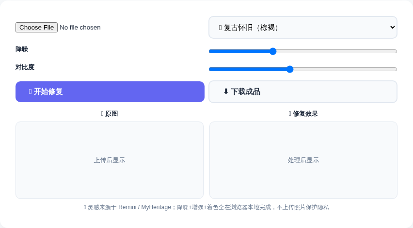
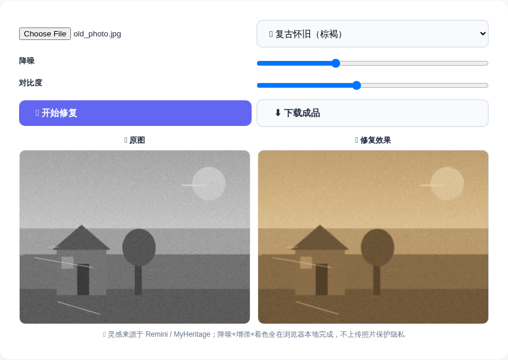
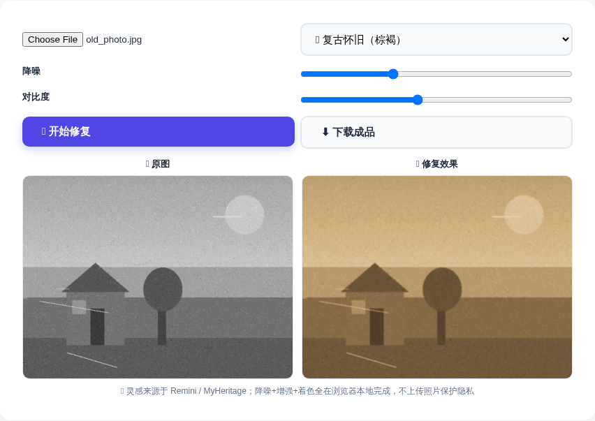
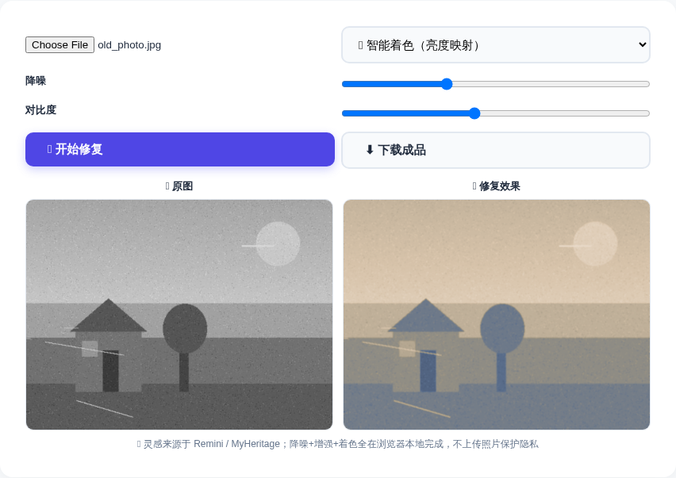
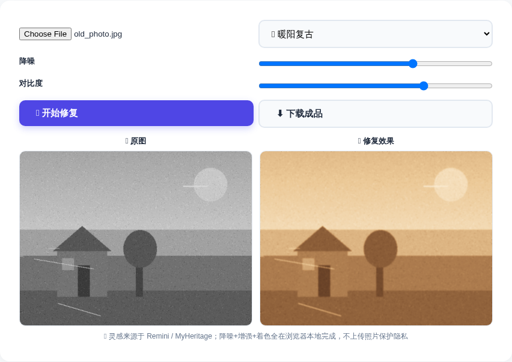

翻出家里那沓老照片：泛黄、褪色、布满噪点和划痕，扫描出来更是灰蒙蒙一片。送出去修复一张几十块，用 Remini / MyHeritage 这类 App 上色还要开付费会员……其实完全没必要。
老照片修复上色 工具把降噪、去划痕、增强对比、复古着色全都在你的浏览器里本地完成：上传照片 → 选一种色调 → 点修复，3 步就能得到一张干净、生动、有氛围感的"新"照片。不传图、不注册、完全免费。
进入 ToolBox 首页，点击「图片处理」分类，找到「🖼️ 老照片修复上色」工具卡片；或者直接点击下方按钮快速进入。
工具界面左侧是文件上传，右侧是风格选择（默认「复古怀旧·棕褐」）。点击「选择文件」把老照片（JPG/PNG 等常见格式都行）传上来，上传后左侧"原图"区域会立即显示照片。


这是最有意思的一步——同样一张旧照片，不同的色调直接决定整体氛围：
| 风格 | 效果 | 适合场景 |
|---|---|---|
| 🟤 复古怀旧（棕褐） | 经典 sepia 老照片色调 | 最还原旧照片质感，通用首选 |
| 🟠 暖阳复古 | 偏暖的米黄调，明亮柔和 | 家庭合影、阳光场景 |
| 🔵 冷调胶片 | 偏冷青蓝的胶片感 | 街景、建筑、年代感氛围 |
| 🟢 墨绿岁月 | 低饱和墨绿色调 | 军旅、旧物、文艺风 |
| ⚫ 黑白增强 | 只增强不染色，保留黑白 | 只想去除划痕噪点，不想要颜色 |
| 🌈 智能着色（亮度映射） | 按亮度自动映射暖色到画面 | 想要"仿佛原本就是彩色"的效果 |
如果照片噪点特别多，把「降噪」拉到 2~3 档；画面发灰发闷，就把「对比度」适当调高（默认 110 已经很均衡）。然后点击「✨ 开始修复」，右侧"修复效果"区域会实时渲染出结果。

对比上方两张图：降噪清掉了颗粒和划痕，对比度让层次重新立起来，画面干净了许多。


满意后点击「⬇️ 下载成品」，修复好的照片就以原分辨率保存到你的电脑。
修复出来的照片能用在哪些地方？这里列举几个最常见的场景：
Q：照片会传到服务器吗？安全吗？
不会。所有处理都在你自己的浏览器里本地完成（Canvas 计算），照片不会上传到任何服务器，可以放心处理私密照片。
Q：已经是彩色的照片可以用吗？
可以。彩色照片同样能去噪、增强对比，让它更通透；也可以选择「黑白增强」风格做艺术化处理，或者「棕褐」风格统一成怀旧调。
Q：能修复破损、模糊的脸部或缺失的细节吗？
这个工具擅长"降噪 + 增强 + 着色"：能明显改善噪点、划痕、发灰发暗等问题。但如果是大面积破损、五官完全模糊，需要 AI 补全重建（像 Remini 那种），本地工具无法凭空补出缺失信息。建议先用本工具做基础修复，效果已经很可观。
Q：下载的成品是什么格式？
按原图分辨率导出的 PNG 格式，适合再次编辑和打印。
📌 家里那沓老照片，是时候翻出来修一修了
🖼️ 去修复老照片 →